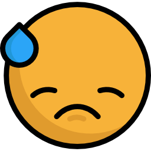
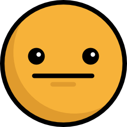
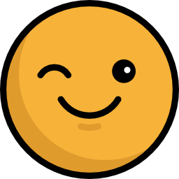

<ion-content padding class="fundo">
  <h2 text-center style="color:#4e4940;margin-top:70px;margin-bottom:30px;font-size:34px">Teste de<br> sedentarismo</h2>
  <h5 text-center style="color:#4e4940;margin-bottom:10px">Confira se você é sedentario<br> ou não com esse teste</h5>
  <ion-grid>
    <ion-row>
      <ion-col>
        
      </ion-col>
      <ion-col>
        
      </ion-col>
      <ion-col>
        
      </ion-col>
      <ion-col>
        
      </ion-col>
    </ion-row>
  </ion-grid>
  <button ion-button block color="amarelo1" style="margin-top:20px; width:65%; display:block; margin-left:auto; margin-right:auto" (click)="iniciar()">Iniciar teste</button>
  <button ion-button outline class="botao" style="margin-top:10px; width:65%; display:block; margin-left:auto; margin-right:auto;color:#4e4940" (click)="voltar()">Voltar</button>
</ion-content>
